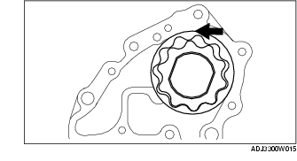

-
Warning
-
• Hot engines and engine oil can cause severe burns. Turn off the engine and wait until it and the engine oil have cooled.
1. Measure the clearance between the inner rotor and the outer rotor using a feeler gauge.

-
• If it exceeds the maximum specification, replace the inner rotor or the outer rotor, or the both.
Oil pump tip clearance
-
Standard: 0.02-0.18 mm {0.0008-0.0070 in}
-
Maximum: 0.20 mm {0.0078 in}
2. Measure the clearance between the outer rotor and the body using a feeler gauge.

-
• If it exceeds the maximum specification, replace the outer rotor or oil pump body, or both.
Oil pump body clearance
-
Standard: 0.09-0.175 mm {0.0036-0.0068 in}
-
Maximum: 0.20 mm {0.0078 in}
3. Measure the side clearance using a feeler gauge.

-
• If it exceeds the maximum specification, replace the inner rotor or oil pump body, or both.
Oil pump side clearance
-
Standard: 0.03-0.07 mm {0.0012-0.0027 in}
-
Maximum: 0.09 mm {0.0035 in}
4. Measure the free length of the plunger spring using the vernier caliper.

-
• If it is less than the specification, replace the plunger spring
Oil pump plunger spring free length
-
45.94 mm {1.8087 in}